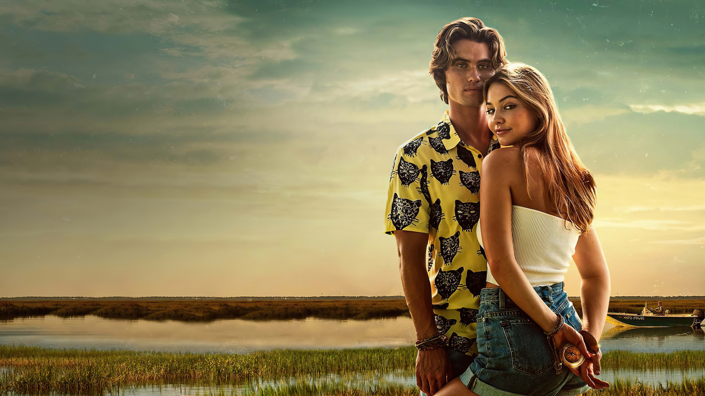
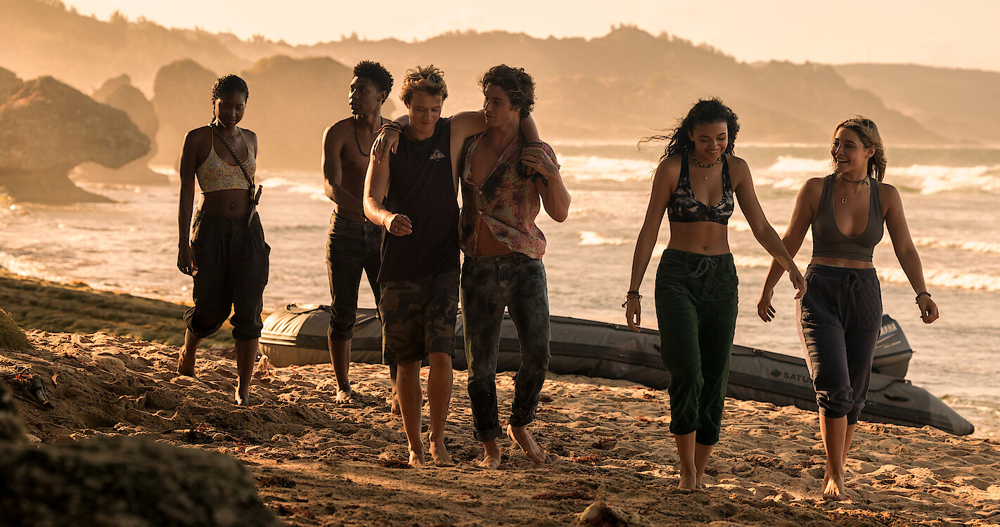
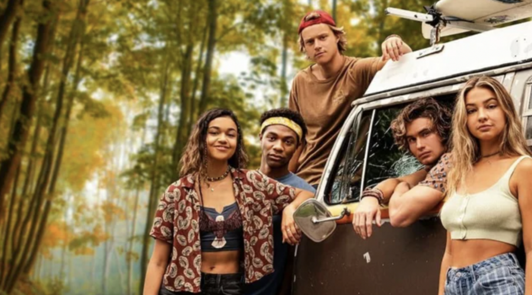
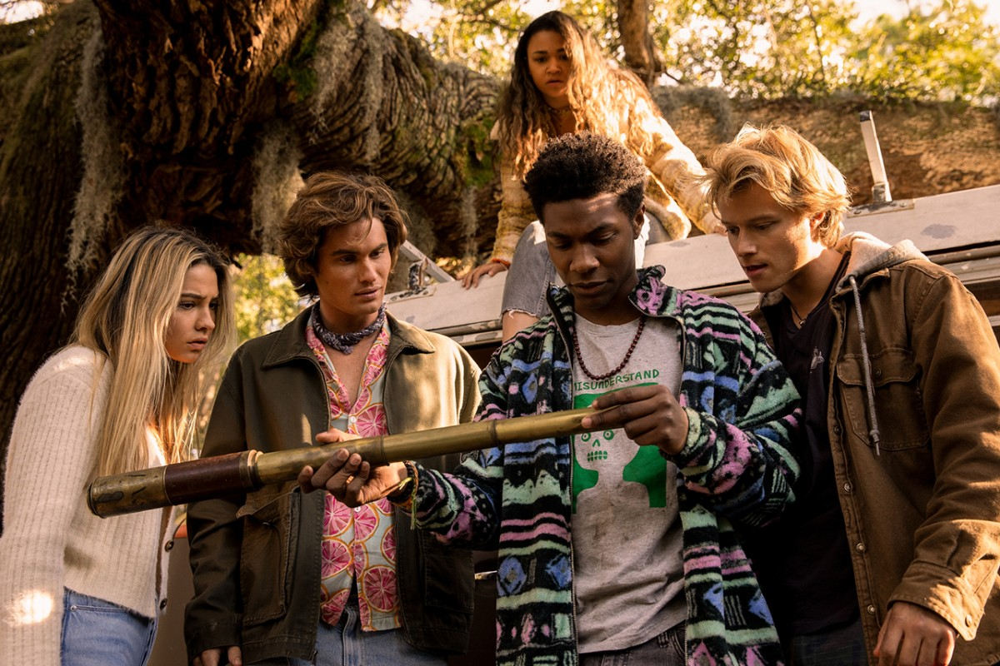
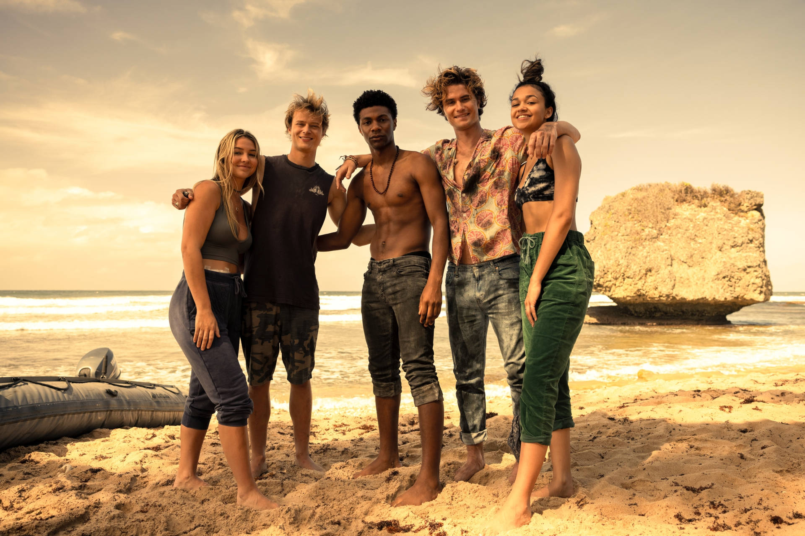

Outer Banks segue um grupo de adolescentes nos Outer Banks da Carolina do Norte, chamados "Pogues", que estão determinados a descobrir o que aconteceu com o "pai desaparecido do líder". Ao longo do caminho, eles descobrem o tesouro lendário do famoso Royal Merchant que está ligado ao pai.